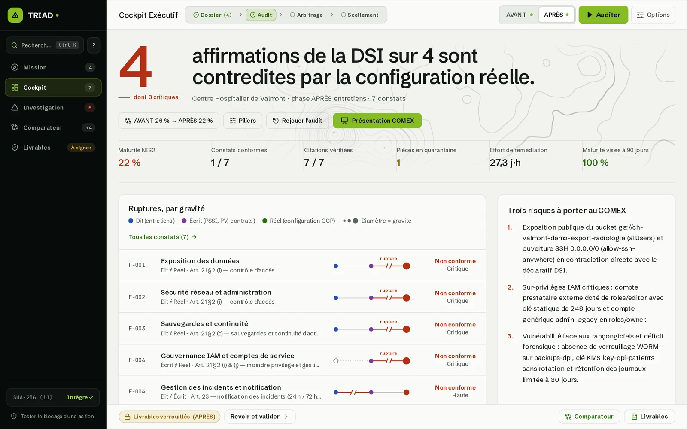

Hackathon Deloitte × Google Cloud, team project
Hackathon Deloitte × Google Cloud, projet d'équipe
TRIAD
An adversarial NIS2 cyber audit. Four AI agents compare what the IT department says, what it wrote, and what is really configured in its cloud. Each contradiction becomes a sourced finding.
Un audit cyber NIS2 contradictoire. Quatre agents IA comparent ce que la DSI dit, ce qu'elle a écrit et ce qui est réellement configuré dans son cloud. Chaque contradiction devient un constat sourcé.
My part:
Ma partie :
- The 4 agents, with Google ADK and Gemini on Vertex AI
- Read-only probes on IAM, firewall, storage, backups, KMS and logs
- FastAPI backend on Cloud Run, infrastructure in Terraform
- Les 4 agents, avec Google ADK et Gemini sur Vertex AI
- Des sondes en lecture seule sur IAM, pare-feu, stockage, sauvegardes, KMS et journaux
- Backend FastAPI sur Cloud Run, infrastructure en Terraform
